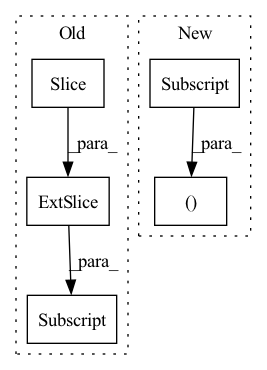

Pattern ID :748
Before Change
//predict_vecs: batch_size, voc_dim, max_length
predict_vecs = torch.zeros(batch_size, self.voc_dim, tgt.size(1) ).to(self.device)
curr_sz = tgt.size(1)
predict_vecs[:,:,:curr_sz] = output[:,:,:curr_sz]
return predict_vecs
After Change
else hidden[0] //h_n
// hidden: 1, batch_size, hidden_dim * directions ->tking only last two layers
hidden = torch.cat((hidden[-2,:,:], hidden[-1,:,:] ), dim = -1) if self.directions == 2 \
else hidden[:,-1,:]
//output :shp: batch_size, word_voc_dimIn pattern: SUPERPATTERN
Frequency: 3
Non-data size: 5
Instances Fragment ID: 2755930
Project Name: ai4bharat/indiannlp-transliteration
Commit Name: dd71aab694ee1ae4c77b39cda0366d04f31f0909
Time: 2020-06-16
Author: josephgeobenjamin@gmail.com
File Name: algorithms/recurrent_nets.py
M Class Name: CorrectionBasicNet
N Class Name: VocabCorrectorNet
M Method Name: forward(3)
N Method Name: forward(4)
M Parent Class: nn.Module
N Parent Class: nn.Module
M File Name: algorithms/recurrent_nets.py
N File Name: algorithms/recurrent_nets.py
M Start Line: 618
M End Line: 640
N Start Line: 646
N End Line: 668
Before Change
idx_theta2 = torch.cat([idx_theta, idx_theta], dim=1)
// Calculate $[-x^{(\frac{d}{2} + 1)}, -x^{(\frac{d}{2} + 2)}, ..., -x^{(d)}, x^{(1)}, x^{(2)}, ..., -x^{(\frac{d}{2})}]$
neg_half_x = torch.cat([-x[:, :, :, d_2:] , x[:, :, :, :d_2]], dim=-1)
// Calculate
//After Change
self._build_cache(x)
// Split the features, we can choose to apply rotary embeddings only to a partial set of features.
x_rope, x_pass = x[..., :self.d], x[..., self.d:]
// Calculate
// $[-x^{(\frac{d}{2} + 1)}, -x^{(\frac{d}{2} + 2)}, ..., -x^{(d)}, x^{(1)}, x^{(2)}, ..., x^{(\frac{d}{2})}]$
neg_half_x = self._neg_half(x_rope) Fragment ID: 2755931
Project Name: lab-ml/nn
Commit Name: 0ce65adf9e602321109528b05cf99fccb16cd2de
Time: 2022-06-03
Author: vpjayasiri@gmail.com
File Name: labml_nn/transformers/rope/__init__.py
M Class Name: RotaryPositionalEmbeddings
N Class Name: RotaryPositionalEmbeddings
M Method Name: forward(2)
N Method Name: forward(2)
M Parent Class: nn.Module
N Parent Class: nn.Module
M File Name: labml_nn/transformers/rope/__init__.py
N File Name: labml_nn/transformers/rope/__init__.py
M Start Line: 132
M End Line: 163
N Start Line: 171
N End Line: 193
Before Change
gate = self.norm(gate)
weight, bias = self.weight, self.bias
weight, bias = weight[:, :n, :n], bias[:, :n]
mask = torch.ones(weight.shape[:2], device = device).triu_(1).bool()
weight = weight.masked_fill(mask[..., None], 0.)
After Change
gate = self.norm(gate)
gate = F.pad(gate, (0, 0, 0, 0, 1, 0), value = 0.)
gate = torch.cat((gate[:, :-1], gate[:, 1:] ), dim = 2)
weight, bias = self.weight, self.bias
Fragment ID: 2755928
Project Name: lucidrains/g-mlp-gpt
Commit Name: a2f065dfcf7be1d1e4b205ac1a55de4ad1b3327d
Time: 2021-05-20
Author: lucidrains@gmail.com
File Name: g_mlp_gpt/g_mlp_gpt.py
M Class Name: CausalSpatialGatingUnit
N Class Name: CausalLocalSGU
M Method Name: forward(2)
N Method Name: forward(2)
M Parent Class: nn.Module
N Parent Class: nn.Module
M File Name: g_mlp_gpt/g_mlp_gpt.py
N File Name: g_mlp_gpt/g_mlp_gpt.py
M Start Line: 90
M End Line: 100
N Start Line: 130
N End Line: 154